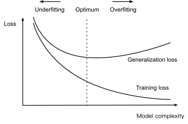
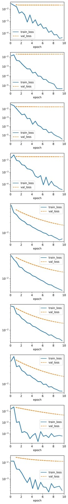
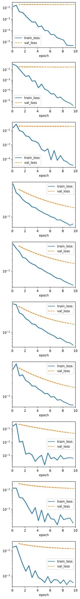

Linear Neural Networks for Regression
Chapter 3.1: Linear Regression
Based on "Dive into Deep Learning" by Zhang et al.
Instructor: Hafsteinn Einarsson
University of Iceland
Why Start with Linear Models?
- Focus on fundamentals of neural network training
- Understand parametrization and loss functions
- Master optimization techniques
- Build foundation for deep networks
Linear models are the stepping stones to deep learning!
Learning Objectives
- Understand linear regression as a neural networkA computational model inspired by biological neural networks, consisting of interconnected nodes (neurons) that process information
- Master the squared lossA loss function that penalizes predictions by the square of their difference from true values: L = (ŷ - y)² function
- Learn gradient descentAn optimization algorithm that iteratively adjusts parameters in the direction of steepest decrease of the loss function optimization
- Connect to probabilistic interpretation via MLEMaximum Likelihood Estimation: finding parameter values that maximize the probability of observing the given data
- Implement vectorized operations for efficiency
The Regression Problem
Predicting numerical values from input features
Example: House Price Prediction
- Features: area (sq ft), age (years)
- Target: price ($)
Goal: Learn a function that maps features to target values
Key Terminology
Data Components
- Training set: Dataset for learning
- Example: One data point
- Label (y): Target value
- Features (x): Input variables
Notation
- n: number of examples
- d: number of features
- x(i): i-th example
- xj(i): j-th feature of i-th example
The Linear Model
Assumption: target is a weighted sum of features plus bias
House price example:
$$\text{price} = w_{\text{area}} \cdot \text{area} + w_{\text{age}} \cdot \text{age} + b$$- Weights (w): Influence of each feature
- Bias (b): Baseline value when features = 0
Vector Notation
Compact representation using linear algebra
Single prediction:
$$\hat{y} = \mathbf{w}^T \mathbf{x} + b$$Batch predictions:
$$\hat{\mathbf{y}} = \mathbf{X}\mathbf{w} + b$$where X ∈ ℝn×d is the design matrix
Interactive Linear Regression Demo
Test Your Understanding
Measuring Model Quality
How well does our model fit the data?
Loss Function: Quantifies prediction error
- Smaller loss = better fit
- Perfect prediction → loss = 0
Squared Error Loss
Most common loss for regression
For single example:
$$l^{(i)}(\mathbf{w}, b) = \frac{1}{2}(\hat{y}^{(i)} - y^{(i)})^2$$For entire dataset:
$$L(\mathbf{w}, b) = \frac{1}{n}\sum_{i=1}^n l^{(i)}(\mathbf{w}, b)$$The factor 1/2 simplifies derivatives
Visualizing the Loss
Properties of Squared Loss
Advantages
- Differentiable everywhere
- Penalizes large errors heavily
- Unique minimum (convex)
- Simple gradient computation
Disadvantages
- Sensitive to outliers
- Assumes Gaussian noise
- May overfit to anomalies
Test Your Understanding
Finding Optimal Parameters
Two approaches to minimize the loss
Analytic Solution
- Closed-form formula
- Exact solution
- Requires matrix inversion
- Limited to linear regression
Gradient Descent
- Iterative optimization
- Approximate solution
- Works for any differentiable loss
- Scales to deep learning
Analytic Solution: Overview
Finding the exact solution through calculus
Goal: Minimize the squared error loss analytically
Let's derive the famous normal equation step by step!
Step 1: The Objective
We want to minimize the squared error loss:
Where:
- $\mathbf{y}$: $n \times 1$ vector (target values)
- $X$: $n \times d$ design matrix
- $\mathbf{w}$: $d \times 1$ vector of parameters
Step 2: Expanding the Squared Norm
The squared norm of a vector $\mathbf{a}$ is defined as:
Therefore:
$$L(\mathbf{w}) = (\color{#10099F}{\mathbf{y}} - \color{#2DD2C0}{X}\color{#FC8484}{\mathbf{w}})^\top (\color{#10099F}{\mathbf{y}} - \color{#2DD2C0}{X}\color{#FC8484}{\mathbf{w}})$$🔑 Key insight: We convert the norm into an inner product!
Test Your Understanding
Step 3: Expanding the Quadratic Form
Expand like a quadratic expression $(a-b)^2 = a^2 - 2ab + b^2$:
- $\mathbf{y}^\top \mathbf{y}$: Constant term (doesn't depend on $\mathbf{w}$)
- $-2\mathbf{y}^\top X\mathbf{w}$: Linear term in $\mathbf{w}$
- $\mathbf{w}^\top X^\top X \mathbf{w}$: Quadratic term in $\mathbf{w}$
Step 4: Matrix Calculus Rules
Key differentiation rules we'll use:
- $\frac{\partial}{\partial \mathbf{w}} \; c = \mathbf{0}$ (constant rule)
- $\frac{\partial}{\partial \mathbf{w}} \; \mathbf{b}^\top \mathbf{w} = \mathbf{b}$ (linear rule)
- $\frac{\partial}{\partial \mathbf{w}} \; \mathbf{w}^\top A \mathbf{w} = (A + A^\top)\mathbf{w}$ (quadratic form rule)
- If $A$ is symmetric: $\frac{\partial}{\partial \mathbf{w}} \; \mathbf{w}^\top A \mathbf{w} = 2A\mathbf{w}$
Note: $X^\top X$ is always symmetric!
Test Your Understanding
Step 5: Taking Derivatives
Apply the rules term by term:
- $\frac{\partial}{\partial \mathbf{w}} \; \color{#10099F}{\mathbf{y}^\top \mathbf{y}} = \mathbf{0}$ (constant)
- $\frac{\partial}{\partial \mathbf{w}} \; \color{#2DD2C0}{\mathbf{y}^\top X\mathbf{w}} = \color{#2DD2C0}{X^\top \mathbf{y}}$ (linear)
- $\frac{\partial}{\partial \mathbf{w}} \; \color{#FC8484}{\mathbf{w}^\top X^\top X \mathbf{w}} = \color{#FC8484}{2X^\top X \mathbf{w}}$ (quadratic)
Therefore:
$$\nabla_\mathbf{w} L(\mathbf{w}) = \color{#2DD2C0}{-2X^\top \mathbf{y}} + \color{#FC8484}{2X^\top X \mathbf{w}}$$Step 6: Setting Gradient to Zero
At the optimum, the gradient equals zero:
Simplifying:
$$\color{#FC8484}{X^\top X \mathbf{w}} = \color{#2DD2C0}{X^\top \mathbf{y}}$$These are called the normal equationsCalled 'normal' because the error vector (y - Xw) is perpendicular (normal) to the column space of X at the solution.!
Step 7: Solving for w
If $X^\top X$ is invertible:
This is the analytic solution to linear regression!
📝 The matrix $(X^\top X)^{-1} X^\top$ is called the Moore-Penrose pseudoinverseA generalization of the inverse matrix that can handle non-square and singular matrices.
Test Your Understanding
Key Insights
Summary of the derivation approach:
- Norm to inner product: $\|\mathbf{a}\|^2 = \mathbf{a}^\top \mathbf{a}$
- Expand quadratic: Like $(a-b)^2$
- Apply calculus rules: Term by term
- Set gradient = 0: Find critical point
- Solve linear system: Get closed form
💡 This same approach works for any quadratic objective!
Limitations of Analytic Solution
When it fails:
- $X^\top X$ not invertible (multicollinearity)
- More features than samples ($d > n$)
- Computational cost: $O(d^3)$ for inversion
- Does not extend to nonlinear models
⚠️ Rarely applicable in deep learning!
That is why we need gradient descent!
Gradient Descent
Iteratively reduce error by following the gradient
Update rule:
$$(\mathbf{w}, b) \leftarrow (\mathbf{w}, b) - \eta \nabla_{(\mathbf{w},b)} L$$- η: learning rateA hyperparameter that controls the step size in gradient descent. Too small: slow convergence. Too large: may overshoot minimum.
- ∇L: gradient of loss
Minibatch SGD
Balance between efficiency and stability
Batch GD
- Use all data
- Stable
- Slow per iteration
SGD
- One example
- Noisy
- Fast per iteration
Minibatch SGD ✓
- Small batch
- Good balance
- GPU efficient
Typical batch sizes: 32, 64, 128, 256
Gradient Descent Animation
Computing Gradients for a Minibatch
How do we calculate the gradients needed for updates?
Minibatch loss function:
$$L(\mathbf{w}, b) = \frac{1}{|\mathcal{B}|} \sum_{i \in \mathcal{B}} l^{(i)}(\mathbf{w}, b)$$
where each sample's loss is:
$$l^{(i)} = \frac{1}{2}(\mathbf{w}^T\mathbf{x}^{(i)} + b - y^{(i)})^2$$
We need to compute:
- $\frac{\partial L}{\partial \mathbf{w}}$ - gradient w.r.t. weights
- $\frac{\partial L}{\partial b}$ - gradient w.r.t. bias
These gradients tell us how to adjust parameters to minimize loss
Gradient with Respect to Weights
Step-by-step derivation using the chain rule
Step 1: Start with one sample's loss
$$l^{(i)} = \frac{1}{2}\color{blue}{(\mathbf{w}^T\mathbf{x}^{(i)} + b - y^{(i)})}^2$$
Let's call the blue part the "error" $e^{(i)}$
Step 2: Apply chain rule
$$\frac{\partial l^{(i)}}{\partial \mathbf{w}} = \color{blue}{e^{(i)}} \cdot \frac{\partial e^{(i)}}{\partial \mathbf{w}}$$
Key insight:
$$\frac{\partial e^{(i)}}{\partial \mathbf{w}} = \frac{\partial}{\partial \mathbf{w}}(\mathbf{w}^T\mathbf{x}^{(i)}) = \color{green}{\mathbf{x}^{(i)}}$$
So: $\frac{\partial l^{(i)}}{\partial \mathbf{w}} = \color{blue}{e^{(i)}} \cdot \color{green}{\mathbf{x}^{(i)}}$
Step 3: Average over minibatch
$$\frac{\partial L}{\partial \mathbf{w}} = \frac{1}{|\mathcal{B}|} \sum_{i \in \mathcal{B}} \color{green}{\mathbf{x}^{(i)}}\color{blue}{(\mathbf{w}^T\mathbf{x}^{(i)} + b - y^{(i)})}$$
Gradient with Respect to Bias
Similar process, but simpler result
Step 1: Same starting point
$$l^{(i)} = \frac{1}{2}\color{blue}{(\mathbf{w}^T\mathbf{x}^{(i)} + b - y^{(i)})}^2$$
Step 2: Apply chain rule
$$\frac{\partial l^{(i)}}{\partial b} = \color{blue}{e^{(i)}} \cdot \frac{\partial e^{(i)}}{\partial b}$$
The derivative of $b$ w.r.t. itself is 1
Simplification:
$$\frac{\partial l^{(i)}}{\partial b} = \color{blue}{e^{(i)}} \cdot \color{orange}{1} = \color{blue}{e^{(i)}}$$
Step 3: Average over minibatch
$$\frac{\partial L}{\partial b} = \frac{1}{|\mathcal{B}|} \sum_{i \in \mathcal{B}} \color{blue}{(\mathbf{w}^T\mathbf{x}^{(i)} + b - y^{(i)})}$$
Bias gradient = average error!
Gradient Interpretation
Weight Gradient
- Direction depends on input $\mathbf{x}^{(i)}$
- Magnitude scales with error
- If error > 0: gradient points in direction of $\mathbf{x}$
- If error < 0: gradient points opposite to $\mathbf{x}$
Bias Gradient
- Simply the average error
- No dependence on input
- If predictions too high: positive gradient
- If predictions too low: negative gradient
Key insight: Gradients tell us how to adjust parameters to reduce error!
Parameter Update Formulas
For linear regression with squared loss:
Weight update:
$$\mathbf{w} \leftarrow \mathbf{w} - \frac{\eta}{|\mathcal{B}|} \sum_{i \in \mathcal{B}} \color{green}{\mathbf{x}^{(i)}}\color{blue}{(\mathbf{w}^T\mathbf{x}^{(i)} + b - y^{(i)})}$$Bias update:
$$b \leftarrow b - \frac{\eta}{|\mathcal{B}|} \sum_{i \in \mathcal{B}} \color{blue}{(\mathbf{w}^T\mathbf{x}^{(i)} + b - y^{(i)})}$$Test Your Understanding
Probabilistic View
Why squared loss? A statistical perspective
Assumption: Observations have Gaussian noise
$$y = \mathbf{w}^T\mathbf{x} + b + \epsilon$$ $$\epsilon \sim \mathcal{N}(0, \sigma^2)$$Normal Distribution
Maximum Likelihood Estimation
Find parameters that maximize data probability
Likelihood of observing y given x:
$$P(y|\mathbf{x}) = \frac{1}{\sqrt{2\pi\sigma^2}} \exp\left(-\frac{1}{2\sigma^2}(y - \mathbf{w}^T\mathbf{x} - b)^2\right)$$Key insight:
Maximizing likelihood ≡ Minimizing squared error!
Why Maximizing Likelihood = Minimizing Error
Likelihood measures:
How probable is our data given the model?
- Higher likelihood → Model better explains observations
- Want to find w, b that maximize P(y|X)
Why use logarithms?
- Products become sums: log(∏) = Σlog
- Numerical stability (avoid underflow)
- Monotonic: max(P) = max(log P)
Why negative log?
- Optimization tools minimize (not maximize)
- max(log P) = min(-log P)
- Standard convention in ML
The key insight:
Under Gaussian noise assumption:
- The exponent contains (y - ŷ)²
- Log brings it down as main term
- This IS the squared error!
The error term (y - ŷ)² emerges naturally from the Gaussian distribution!
Step-by-Step Derivation
Step 1: Single observation likelihood
$$P(y|\mathbf{x}) = \frac{1}{\sqrt{2\pi\sigma^2}} \exp\left(-\frac{1}{2\sigma^2}(y - \mathbf{w}^T\mathbf{x} - b)^2\right)$$Step 2: Take logarithm
$$\log P(y|\mathbf{x}) = \log\left(\frac{1}{\sqrt{2\pi\sigma^2}}\right) + \log\left(\exp\left(-\frac{1}{2\sigma^2}(y - \mathbf{w}^T\mathbf{x} - b)^2\right)\right)$$ $$= -\frac{1}{2}\log(2\pi\sigma^2) - \frac{1}{2\sigma^2}(y - \mathbf{w}^T\mathbf{x} - b)^2$$Step 3: For n independent observations
$$P(\mathbf{y}|\mathbf{X}) = \prod_{i=1}^n P(y^{(i)}|\mathbf{x}^{(i)})$$ $$\log P(\mathbf{y}|\mathbf{X}) = \sum_{i=1}^n \log P(y^{(i)}|\mathbf{x}^{(i)})$$Step 4: Expand the sum
$$\log P(\mathbf{y}|\mathbf{X}) = -\frac{n}{2}\log(2\pi\sigma^2) - \sum_{i=1}^n\frac{1}{2\sigma^2}(y^{(i)} - \mathbf{w}^T\mathbf{x}^{(i)} - b)^2$$Step-by-Step Derivation (cont'd)
Arriving at the squared loss
Step 5: Negate for minimization
$$-\log P(\mathbf{y}|\mathbf{X}) = \frac{n}{2}\log(2\pi\sigma^2) + \frac{1}{2\sigma^2}\sum_{i=1}^n(y^{(i)} - \mathbf{w}^T\mathbf{x}^{(i)} - b)^2$$Step 6: Identify what matters for optimization
- $\frac{n}{2}\log(2\pi\sigma^2)$ is constant w.r.t. w and b
- $\frac{1}{2\sigma^2}$ is just a scaling factor
- Only $\sum_{i=1}^n(y^{(i)} - \mathbf{w}^T\mathbf{x}^{(i)} - b)^2$ depends on parameters!
Therefore: Minimizing -log P(y|X) ≡ Minimizing squared loss!
$$\text{argmin}_{\mathbf{w},b} \left[-\log P(\mathbf{y}|\mathbf{X})\right] = \text{argmin}_{\mathbf{w},b} \sum_{i=1}^n(y^{(i)} - \mathbf{w}^T\mathbf{x}^{(i)} - b)^2$$Connection to Squared Loss
The fundamental equivalence
Final result:
$$-\log P(\mathbf{y}|\mathbf{X}) = \underbrace{\frac{1}{2\sigma^2}}_{\text{scaling}} \underbrace{\sum_{i=1}^n (y^{(i)} - \mathbf{w}^T\mathbf{x}^{(i)} - b)^2}_{\text{squared loss}} + \underbrace{\frac{n}{2}\log(2\pi\sigma^2)}_{\text{constant}}$$Key implications:
- Squared loss is not arbitrary - it's principled!
- Assumes errors are normally distributed
- Justifies why MSE is so commonly used
Remember: Minimizing squared loss = Maximum likelihood estimation under Gaussian noise!
Test Your Understanding
Linear Regression as a Neural Network
The simplest possible network architecture
Network Components
- Input layer: Features x₁, x₂, ..., xₐ
- Weights: Connections w₁, w₂, ..., wₐ
- Bias: Additional parameter b
- Output: Single neuron producing ŷ
No hidden layers = Linear model
Biological Inspiration

Biological Neuron
- Dendrites: inputs
- Soma: processing
- Axon: output
- Synapses: connections
Artificial Neuron
- Input features
- Weighted sum
- Output value
- Weights
Modern deep learning draws inspiration from many fields beyond neuroscience, including mathematicsLinear algebra, calculus, and optimization theory provide the foundation for gradient descent, matrix operations, and loss functions, statisticsStatistical learning theory guides model selection, overfitting prevention, and understanding of generalization bounds, computer scienceAlgorithms, data structures, and computational complexity theory enable efficient implementation and scaling of neural networks, physicsEnergy minimization principles, statistical mechanics, and dynamical systems theory inform optimization landscapes and training dynamics, and cognitive scienceUnderstanding of perception, attention, and information processing inspires architectural choices and learning mechanisms.
Test Your Understanding
Vectorization for Speed
Why vectorized operations matter
# Slow: explicit loop
c = torch.zeros(n)
for i in range(n):
c[i] = a[i] + b[i]
# Fast: vectorized
c = a + b # 100-1000x faster!Always use vectorized operations in deep learning!
Test Your Understanding
Object-Oriented Design for Deep Learning
Building modular and reusable neural networks
Key Question: How do we organize code for complex deep learning projects?
OO design provides structure, reusability, and maintainability
Why Object-Oriented Design?
- Code becomes complex as models grow
- Need to separate concerns (data, model, training)
- Facilitate code reuse across projects
- Enable easy experimentation and iteration
- Improve collaboration in teams
Good architecture accelerates research and development!
Design Principles
Separation of Concerns
- Data handling
- Model architecture
- Training logic
- Evaluation metrics
Modularity
- Reusable components
- Plug-and-play design
- Easy testing
- Clear interfaces
Class Hierarchy
Inheritance structure for deep learning components
Test Your Understanding
Building Blocks of OO Deep Learning
Three core classes for organizing deep learning code
- Module: Neural network models
- DataModule: Data preparation and loading
- Trainer: Training orchestration
The Module Class
Base class for all neural network models
Key responsibilities:
- ParametersLearnable weights and biases that define the model storage and management
- Forward pass computation
- Loss calculation
- Optimizer configuration
The DataModule Class
Encapsulates all data-related operations
Key responsibilities:
- Data generation or loading
- Train/validation/test splits
- Batching and shuffling
- Data transformations
Data Pipeline Flow
From raw data to training batches
The Trainer Class
Manages the entire training process
Key responsibilities:
- Training loop execution
- Gradient computation and updates
- Progress tracking
- Model checkpointing
Test Your Understanding
Implementing the OO Pattern
Utilities and techniques for clean implementation
Key features:
- Dynamic method registration
- Automatic hyperparameter tracking
- Interactive progress visualization
The add_to_class Decorator
Dynamically add methods to existing classes
def add_to_class(Class):
"""Register functions as methods in created class."""
def wrapper(obj):
setattr(Class, obj.__name__, obj)
return wrapper
# Usage example
@add_to_class(Module)
def training_step(self, batch):
l = self.loss(self(*batch[:-1]), batch[-1])
self.plot('loss', l, train=True)
return lEnables modular code organization!
HyperParameters Base Class
Automatic configuration management
@d2l.add_to_class(d2l.HyperParameters)
def save_hyperparameters(self, ignore=[]):
"""Save function arguments into class attributes."""
frame = inspect.currentframe().f_back
_, _, _, local_vars = inspect.getargvalues(frame)
self.hparams = {k:v for k, v in local_vars.items()
if k not in set(ignore+['self']) and not k.startswith('_')}
for k, v in self.hparams.items():
setattr(self, k, v)Automatically tracks all initialization parameters!
ProgressBoard Visualization
Real-time training metrics
- Live loss curves
- Training vs validation metrics
- Automatic smoothing
- Interactive updates
Visual feedback accelerates debugging!
Module Class - Base for Models
The base class for all neural network models
class Module(nn.Module, d2l.HyperParameters): #@save
"""The base class of models."""
def __init__(self, plot_train_per_epoch=2, plot_valid_per_epoch=1):
super().__init__()
self.save_hyperparameters()
self.board = ProgressBoard()
def loss(self, y_hat, y):
raise NotImplementedError
def forward(self, X):
assert hasattr(self, 'net'), 'Neural network is defined'
return self.net(X)
def plot(self, key, value, train):
"""Plot a point in animation."""
assert hasattr(self, 'trainer'), 'Trainer is not inited'
self.board.xlabel = 'epoch'
if train:
x = self.trainer.train_batch_idx / \
self.trainer.num_train_batches
n = self.trainer.num_train_batches / \
self.plot_train_per_epoch
else:
x = self.trainer.epoch + 1
n = self.trainer.num_val_batches / \
self.plot_valid_per_epoch
self.board.draw(x, value.to(d2l.cpu()).detach().numpy(),
('train_' if train else 'val_') + key,
every_n=int(n))
def training_step(self, batch):
l = self.loss(self(*batch[:-1]), batch[-1])
self.plot('loss', l, train=True)
return l
def validation_step(self, batch):
l = self.loss(self(*batch[:-1]), batch[-1])
self.plot('loss', l, train=False)
def configure_optimizers(self):
raise NotImplementedErrorSubclass of nn.Module with automatic plotting and hyperparameter management
DataModule Class - Data Handling
Base class for data preparation and loading
class DataModule(d2l.HyperParameters): #@save
"""The base class of data."""
def __init__(self, root='../data', num_workers=4):
self.save_hyperparameters()
def get_dataloader(self, train):
raise NotImplementedError
def train_dataloader(self):
return self.get_dataloader(train=True)
def val_dataloader(self):
return self.get_dataloader(train=False)- Handles data preparation and preprocessing
- Returns training and validation data loaders
- Data loaders yield batches for training/validation
Trainer Class - Training Logic
Orchestrates the training process
class Trainer(d2l.HyperParameters): #@save
"""The base class for training models with data."""
def __init__(self, max_epochs, num_gpus=0, gradient_clip_val=0):
self.save_hyperparameters()
assert num_gpus == 0, 'No GPU support yet'
def prepare_data(self, data):
self.train_dataloader = data.train_dataloader()
self.val_dataloader = data.val_dataloader()
self.num_train_batches = len(self.train_dataloader)
self.num_val_batches = (len(self.val_dataloader)
if self.val_dataloader is not None else 0)
def prepare_model(self, model):
model.trainer = self
model.board.xlim = [0, self.max_epochs]
self.model = model
def fit(self, model, data):
self.prepare_data(data)
self.prepare_model(model)
self.optim = model.configure_optimizers()
self.epoch = 0
self.train_batch_idx = 0
self.val_batch_idx = 0
for self.epoch in range(self.max_epochs):
self.fit_epoch()
def fit_epoch(self):
raise NotImplementedErrorTest Your Understanding
Synthetic Regression Data
Creating controlled datasets for learning and validation
Key Question: Why create artificial data when real data exists?
Synthetic data helps us understand, validate, and debug our algorithms!
Why Use Synthetic Data?
- Known ground truth: We know the exact parameters
- Controlled complexity: Start simple, add complexity gradually
- Algorithm validation: Check if model recovers true parameters
- Debugging: Isolate issues without data uncertainties
- Educational value: Perfect for understanding concepts
If we can't solve a problem we created, how can we solve real problems?
Benefits for Learning
Real Data Challenges
- Unknown true relationship
- Missing values
- Outliers and noise
- Complex patterns
Synthetic Data Advantages
- Perfect ground truth
- Complete control
- Adjustable noise
- Gradual complexity
Test Your Understanding
Generating the Dataset
Creating data with a known linear relationship
The generative model:
$$\mathbf{y} = \mathbf{X}\mathbf{w} + b + \boldsymbol{\epsilon}$$- X: Features from standard normal distribution
- w, b: Known true parameters
- ε: Gaussian noise
The Generation Process
Step 1: Generate features
$$\mathbf{X} \sim \mathcal{N}(0, 1)^{n \times d}$$Step 2: Apply linear transformation
$$\mathbf{y}_{\text{clean}} = \mathbf{X}\mathbf{w} + b$$Step 3: Add noise
$$\mathbf{y} = \mathbf{y}_{\text{clean}} + \boldsymbol{\epsilon}, \quad \epsilon \sim \mathcal{N}(0, \sigma^2)$$Example Parameters
A concrete example with 2D features
- True weights: $\mathbf{w} = [2, -3.4]^T$
- True bias: $b = 4.2$
- Noise level: $\sigma = 0.01$
- Dataset size: 1000 training + 1000 validation
These become our ground truth for validation!
Interactive Data Generation
Test Your Understanding
SyntheticRegressionData Class
Object-oriented approach to data generation
class SyntheticRegressionData(d2l.DataModule):
"""Synthetic data for linear regression."""
def __init__(self, w, b, noise=0.01, num_train=1000,
num_val=1000, batch_size=32):
super().__init__()
self.save_hyperparameters()
n = num_train + num_val
self.X = torch.randn(n, len(w))
noise = torch.randn(n, 1) * noise
self.y = torch.matmul(self.X, w.reshape((-1, 1))) + b + noiseClass Design Benefits
- Encapsulation: Data and methods in one place
- Reusability: Easy to create multiple datasets
- Configurability: Adjustable parameters
- Integration: Works with training framework
- Extensibility: Can add new features easily
Good design accelerates experimentation!
Understanding the Components
Initialization
- Store true parameters
- Set dataset sizes
- Configure batch size
- Generate all data upfront
Data Generation
- Sample from normal distribution
- Apply linear transformation
- Add controlled noise
- Store features and labels
Using the Data Module
# Create synthetic dataset
data = SyntheticRegressionData(
w=torch.tensor([2, -3.4]),
b=4.2,
noise=0.01,
num_train=1000,
num_val=1000,
batch_size=32
)
# Inspect the data
print('Features:', data.X[0])
print('Label:', data.y[0])
print('Dataset size:', len(data.X))Clean interface hides complexity!
Test Your Understanding
Data Iteration and Minibatches
Efficiently feeding data to the model
Key concepts:
- Minibatch processing
- Random shuffling for training
- Sequential access for validation
- Memory-efficient iteration
Manual Data Loader Implementation
@d2l.add_to_class(SyntheticRegressionData)
def get_dataloader(self, train):
if train:
indices = list(range(0, self.num_train))
# Shuffle for training
random.shuffle(indices)
else:
indices = list(range(self.num_train,
self.num_train + self.num_val))
for i in range(0, len(indices), self.batch_size):
batch_indices = torch.tensor(
indices[i: i + self.batch_size])
yield self.X[batch_indices], self.y[batch_indices]Why Minibatches?
Single Sample
- Very noisy gradients
- Poor hardware utilization
- Fast iteration
Minibatch ✓
- Balanced noise
- GPU efficient
- Good convergence
Full Batch
- Stable gradients
- Memory intensive
- Slow iteration
Minibatches balance efficiency and stability!
Shuffling Importance
With Shuffling
- Breaks data order patterns
- Better gradient estimates
- Faster convergence
- Prevents overfitting to order
Without Shuffling
- May learn spurious patterns
- Biased gradient estimates
- Slower convergence
- Reproducible for debugging
Test Your Understanding
Framework Data Loaders
Leveraging built-in PyTorch functionality
Why use framework loaders?
- Optimized for performance
- Multi-threading support
- Memory pinning for GPU
- Advanced sampling strategies
PyTorch DataLoader Implementation
@d2l.add_to_class(d2l.DataModule)
def get_tensorloader(self, tensors, train, indices=slice(0, None)):
tensors = tuple(a[indices] for a in tensors)
dataset = torch.utils.data.TensorDataset(*tensors)
return torch.utils.data.DataLoader(
dataset,
self.batch_size,
shuffle=train # Automatic shuffling!
)
@d2l.add_to_class(SyntheticRegressionData)
def get_dataloader(self, train):
i = slice(0, self.num_train) if train else \
slice(self.num_train, None)
return self.get_tensorloader((self.X, self.y), train, i)Framework Advantages
Manual Implementation
- Educational value
- Full control
- Simple debugging
- Single-threaded
Framework Loader
- Production ready
- Multi-threading
- GPU optimization
- Rich functionality
Use framework loaders for real projects!
Advanced Features
# Additional DataLoader features
dataloader = torch.utils.data.DataLoader(
dataset,
batch_size=32,
shuffle=True,
num_workers=4, # Parallel data loading
pin_memory=True, # Faster GPU transfer
drop_last=True, # Drop incomplete last batch
prefetch_factor=2 # Prefetch batches
)
# Query properties
print(f'Number of batches: {len(dataloader)}')
print(f'Batch size: {dataloader.batch_size}')
# Iterate with progress
for batch_idx, (X, y) in enumerate(dataloader):
# Process batch
passTest Your Understanding
Practical Considerations
Real-world data loading challenges and solutions
- Large datasets that don't fit in memory
- Streaming data from networks
- On-the-fly data augmentation
- Distributed training requirements
Memory Management Strategies
In-Memory
- Fast access
- Limited size
- Good for small data
Memory-Mapped
- Virtual memory
- OS manages paging
- Medium datasets
Streaming
- Load on demand
- Unlimited size
- I/O overhead
Data Augmentation Pipeline
class AugmentedDataLoader:
def __init__(self, base_data, augmentations):
self.base_data = base_data
self.augmentations = augmentations
def __iter__(self):
for X, y in self.base_data:
# Apply augmentations on-the-fly
X_aug = self.augmentations(X)
yield X_aug, y
# Example: Add noise during training
def add_training_noise(X, noise_level=0.01):
return X + torch.randn_like(X) * noise_levelGenerate variations without storing them!
Best Practices
- Start simple: Use synthetic data for initial testing
- Profile loading: Identify bottlenecks early
- Use caching: Avoid redundant computations
- Prefetch data: Overlap I/O with computation
- Monitor memory: Watch for leaks and inefficiencies
- Test determinism: Ensure reproducible results
Debugging with Synthetic Data
Common Issues
- Model not converging
- Exploding gradients
- Poor generalization
- Slow training
Synthetic Data Tests
- Can recover true params?
- Loss decreases to noise floor?
- Batch size effects?
- Learning rate sensitivity?
Always validate on synthetic data first!
Test Your Understanding
Test Your Understanding
Linear Regression Implementation from Scratch
Building the foundation of deep learning step by step
Why implement from scratch?
- Understand every component deeply
- Demystify the "magic" of frameworks
- Build intuition for debugging
- Learn transferable principles
The Complete Pipeline
Every deep learning model follows this fundamental pattern
Benefits of Understanding Fundamentals
Using Frameworks Only
- Quick to start
- Black box operations
- Hard to debug
- Limited customization
- Framework dependent
Understanding Internals
- Deeper understanding
- Know what's happening
- Effective debugging
- Custom implementations
- Framework agnostic
Framework-Agnostic Principles
Core concepts that apply everywhere
- Parameter initialization: Starting point matters
- Forward propagation: Computing predictions
- Loss calculation: Measuring error
- Backpropagation: Computing gradients
- Parameter updates: Learning from mistakes
These principles power all neural networks!
What We'll Build
A complete linear regression system
class LinearRegressionScratch:
def __init__(self, num_inputs, lr, sigma=0.01):
# Initialize parameters
def forward(self, X):
# Compute predictions
def loss(self, y_hat, y):
# Calculate error
def sgd(self, params, lr):
# Update parameters
def train_epoch(self, train_iter):
# Training loopTest Your Understanding
Defining the Model
Parameter initialization and forward pass
Two key components:
- Parameters: weights (w) and bias (b)
- Forward function: computing predictions
Parameter Initialization
def init_params(num_inputs, sigma=0.01):
"""Initialize model parameters."""
w = torch.normal(0, sigma, (num_inputs, 1),
requires_grad=True)
b = torch.zeros(1, requires_grad=True)
return [w, b]
# Example: 2 input features
w, b = init_params(2)
print(f'w: {w}') # Random values ~N(0, 0.01²)
print(f'b: {b}') # [0.]Small random weights prevent symmetry breakingIf all weights start the same, neurons learn identical features
Vectorization Benefits
Loop Implementation
def forward_slow(X, w, b):
y_hat = []
for i in range(len(X)):
pred = b
for j in range(len(w)):
pred += X[i][j] * w[j]
y_hat.append(pred)
return y_hatSlow, especially for large batches
Vectorized
def forward(X, w, b):
return torch.matmul(X, w) + bFast, leverages optimized libraries
Vectorization can be 10-100x faster!
Test Your Understanding
Defining the Loss Function
Measuring how wrong our predictions are
Squared Loss (L2 Loss):
$$\ell^{(i)}(\mathbf{w}, b) = \frac{1}{2} \left(\hat{y}^{(i)} - y^{(i)}\right)^2$$Why divide by 2? Makes the gradient cleaner!
Derivative of $x^2/2$ is simply $x$
Single Sample vs Minibatch Loss
Single Sample
def loss_single(y_hat, y):
return ((y_hat - y) ** 2) / 2Minibatch (Average)
def loss(y_hat, y):
l = (y_hat - y) ** 2 / 2
return l.mean()Loss Function Properties
Squared loss is convex with a unique minimum
Implementation Details
def squared_loss(y_hat, y):
"""Squared loss for regression."""
# Reshape y to match y_hat dimensions
y = y.reshape(y_hat.shape)
# Compute squared differences
squared_diff = (y_hat - y) ** 2
# Divide by 2 for cleaner gradients
loss_per_sample = squared_diff / 2
# Return mean loss across batch
return loss_per_sample.mean()
# Example
y_hat = torch.tensor([[1.5], [2.0], [3.5]])
y = torch.tensor([[1.0], [2.0], [3.0]])
loss_val = squared_loss(y_hat, y)
print(f'Loss: {loss_val:.4f}') # 0.0625Why Squared Loss?
- Mathematical convenience: Easy to differentiate
- Convex optimization: Guaranteed global minimum
- Penalizes large errors more: Quadratic growth
- Maximum likelihood interpretation: Assumes Gaussian noise
- Smooth gradients: Stable optimization
The foundation of many regression problems!
Test Your Understanding
Defining the Optimization Algorithm
Stochastic Gradient Descent (SGD) from scratch
The update rule:
$$\mathbf{w} \leftarrow \mathbf{w} - \frac{\eta}{|\mathcal{B}|} \sum_{i \in \mathcal{B}} \nabla_{\mathbf{w}} \ell^{(i)}(\mathbf{w}, b)$$- η: learning rate (step size)
- |𝓑|: batch size
- ∇: gradient
SGD Implementation
def sgd(params, lr, batch_size):
"""Stochastic gradient descent."""
with torch.no_grad():
for param in params:
# Update in the negative gradient direction
param -= lr * param.grad / batch_size
# Clear gradients for next iteration
param.grad.zero_()
# Usage example
lr = 0.03
batch_size = 10
# After computing gradients via backprop
sgd([w, b], lr, batch_size)Note: We divide by batch_size because PyTorch sums gradients by default
Understanding the Gradient
For squared loss:
$$\frac{\partial \ell}{\partial \mathbf{w}} = (\hat{y} - y) \cdot \mathbf{x}$$ $$\frac{\partial \ell}{\partial b} = \hat{y} - y$$Intuition:
- Error (ŷ - y) tells us direction and magnitude
- Multiply by input x for weight gradient
- Bias gradient is just the error
Learning Rate Effects
Learning rate controls convergence speed and stability
Minibatch Gradient Accumulation
def train_epoch(X, y, w, b, lr, batch_size):
"""One epoch of training."""
num_batches = len(X) // batch_size
for i in range(num_batches):
# Get minibatch
start = i * batch_size
end = start + batch_size
X_batch = X[start:end]
y_batch = y[start:end]
# Forward pass
y_hat = forward(X_batch, w, b)
# Compute loss
l = squared_loss(y_hat, y_batch)
# Backward pass (compute gradients)
l.backward()
# Update parameters
sgd([w, b], lr, batch_size)In-Place Parameter Updates
Why In-Place?
- Memory efficient
- Preserves gradient tracking
- Required for autograd
Implementation
# Correct: in-place
param -= lr * grad
# Wrong: creates new tensor
param = param - lr * gradUse -= for in-place updates!
Test Your Understanding
Training Loop Implementation
Bringing all components together
The training loop:
- Iterate through epochs
- Shuffle and batch data
- Forward pass → Loss → Backward → Update
- Track training metrics
Complete Training Loop
def train(data_iter, w, b, lr, num_epochs, batch_size):
"""Complete training loop."""
for epoch in range(num_epochs):
# Track epoch loss
total_loss, num_batches = 0.0, 0
for X_batch, y_batch in data_iter:
# Forward pass
y_hat = forward(X_batch, w, b)
# Compute loss
l = squared_loss(y_hat, y_batch)
# Backward pass
l.backward()
# Update parameters
sgd([w, b], lr, batch_size)
# Track metrics
total_loss += l.item()
num_batches += 1
# Print epoch statistics
avg_loss = total_loss / num_batches
print(f'Epoch {epoch+1}, Loss: {avg_loss:.4f}')Training Flow Visualization
Watch how data flows through the training pipeline
Monitoring Training Progress
# Training with progress tracking
num_epochs = 3
lr = 0.03
batch_size = 10
# Initialize tracking
loss_history = []
for epoch in range(num_epochs):
epoch_loss = []
for X, y in data_iter:
y_hat = net(X, w, b)
l = loss(y_hat, y)
l.backward()
sgd([w, b], lr, batch_size)
epoch_loss.append(l.item())
avg_loss = sum(epoch_loss) / len(epoch_loss)
loss_history.append(avg_loss)
print(f'Epoch {epoch + 1}/{num_epochs}')
print(f' Loss: {avg_loss:.6f}')
print(f' w: {w.data.numpy().flatten()}')
print(f' b: {b.item():.4f}')Convergence Tracking
True parameters: w = [2, -3.4], b = 4.2
Common Training Issues
Problems
- Loss not decreasing
- Loss exploding
- Slow convergence
- Oscillating loss
Solutions
- Check learning rate
- Gradient clipping
- Adjust batch size
- Better initialization
Start with small learning rates and increase gradually!
Test Your Understanding
Putting It All Together
Complete implementation with real results
Training configuration:
- True weights: w = [2, -3.4]
- True bias: b = 4.2
- Learning rate: 0.03
- Epochs: 3
- Batch size: 10
Complete LinearRegressionScratch Class
class LinearRegressionScratch:
def __init__(self, num_inputs, lr, sigma=0.01):
self.w = torch.normal(0, sigma, (num_inputs, 1),
requires_grad=True)
self.b = torch.zeros(1, requires_grad=True)
self.lr = lr
def forward(self, X):
"""Linear model prediction."""
return torch.matmul(X, self.w) + self.b
def loss(self, y_hat, y):
"""Squared loss function."""
return ((y_hat - y.reshape(y_hat.shape)) ** 2).mean() / 2
def sgd(self, batch_size):
"""SGD optimizer."""
with torch.no_grad():
for param in [self.w, self.b]:
param -= self.lr * param.grad / batch_size
param.grad.zero_()Training the Model
# Generate synthetic data
true_w = torch.tensor([2, -3.4])
true_b = 4.2
X, y = synthetic_data(true_w, true_b, 1000)
# Initialize model
model = LinearRegressionScratch(num_inputs=2, lr=0.03)
# Create data iterator
batch_size = 10
data_iter = load_array((X, y), batch_size)
# Train for 3 epochs
num_epochs = 3
for epoch in range(num_epochs):
for X_batch, y_batch in data_iter:
l = model.loss(model.forward(X_batch), y_batch)
l.backward()
model.sgd(batch_size)
# Evaluate
with torch.no_grad():
train_l = model.loss(model.forward(X), y)
print(f'Epoch {epoch + 1}, loss {float(train_l):.6f}')Results: Parameter Recovery
print(f'Error in estimating w: {true_w - model.w.reshape(true_w.shape)}')
print(f'Error in estimating b: {true_b - model.b}')Typical output after 3 epochs:
Error in estimating w: tensor([ 0.0003, -0.0002])
Error in estimating b: tensor([0.0008])Successfully recovered the true parameters! 🎉
Training Dynamics
Test Your Understanding
Exercises and Extensions
Deepening understanding through experimentation
Key experiments to try:
- What if we don't initialize parameters?
- How does learning rate affect convergence?
- What happens with different loss functions?
- Can we add gradient clipping?
Experiment 1: No Initialization
# What happens without proper initialization?
class UninitializedModel:
def __init__(self, num_inputs):
# PyTorch would throw an error!
# self.w = ??? # No initialization
# self.b = ??? # No initialization
pass
# Problems:
# 1. No gradients can be computed
# 2. Forward pass would fail
# 3. Model has no learnable parameters
# Lesson: Always initialize parameters!Parameters must exist and have requires_grad=True!
Experiment 2: Learning Rate Effects
Explore how learning rate affects convergence
Experiment 3: Alternative Loss Functions
L1 Loss (MAE)
def l1_loss(y_hat, y):
return torch.abs(y_hat - y).mean()- Less sensitive to outliers
- Non-smooth at zero
Huber Loss
def huber_loss(y_hat, y, delta=1.0):
diff = torch.abs(y_hat - y)
return torch.where(diff < delta,
0.5 * diff ** 2,
delta * diff - 0.5 * delta ** 2).mean()- Best of both worlds
- Smooth and robust
Experiment 4: Gradient Clipping
def sgd_with_clipping(params, lr, batch_size, max_norm=1.0):
"""SGD with gradient clipping."""
with torch.no_grad():
# Compute total gradient norm
total_norm = 0
for param in params:
if param.grad is not None:
total_norm += param.grad.data.norm(2).item() ** 2
total_norm = total_norm ** 0.5
# Clip gradients if needed
clip_coef = max_norm / (total_norm + 1e-6)
if clip_coef < 1:
for param in params:
param.grad.data.mul_(clip_coef)
# Standard SGD update
for param in params:
param -= lr * param.grad / batch_size
param.grad.zero_()Prevents exploding gradients!
Test Your Understanding
From Scratch Implementation: Key Takeaways
- Understanding fundamentals enables better debugging and customization
- Parameter initialization matters - small random values break symmetry
- Squared loss provides smooth gradients for stable optimization
- SGD updates parameters in the negative gradient direction
- The training loop combines forward pass, loss, backward pass, and update
- Hyperparameters like learning rate critically affect convergence
- Synthetic data validates that our implementation works correctly
Concise Implementation with Modern Frameworks
Moving from scratch implementation to high-level APIs
Modern deep learning frameworks make implementation faster and more reliable
The Evolution of Deep Learning Frameworks
First Generation
- Theano (2010)
- DistBelief (2012)
- Caffe (2014)
- Manual gradient computation
Modern Frameworks
- PyTorch
- TensorFlow/Keras
- JAX
- Automatic differentiation
Why Use High-Level APIs?
-
Less Code: Framework handles repetitive tasks
# From Scratch: ~50 lines def linear_regression_scratch(X, w, b): # Manual implementation... # With Framework: 3 lines model = nn.Linear(2, 1) optimizer = optim.SGD(model.parameters(), lr=0.03) loss_fn = nn.MSELoss() - Optimized Performance: Heavily optimized implementations
- Tested Reliability: Battle-tested by thousands of users
- Hardware Acceleration: Automatic GPU/TPU support
Framework Components
What Frameworks Provide
- Predefined layers (Dense/LinearFully connected layer where each input connects to each output)
- Loss functions (MSE, CrossEntropy)
- Optimizers (SGD, Adam, RMSprop)
- Data loaders and preprocessing
- Model serialization
What You Focus On
- Model architecture
- Hyperparameter tuning
- Data preparation
- Experimentation
- Novel algorithms
Test Your Understanding
Defining Models with High-Level APIs
Using framework layers instead of manual implementation
import torch
from torch import nn
class LinearRegression(nn.Module):
def __init__(self):
super().__init__()
self.net = nn.Linear(2, 1) # 2 inputs, 1 output
One line replaces our entire manual linear layer implementation!
The Fully Connected Layer
# Manual implementation
def linear(X, w, b):
return torch.matmul(X, w) + b
# Initialize parameters
w = torch.normal(0, 0.01,
size=(2, 1))
b = torch.zeros(1)
# Framework implementation
# All in one line!
layer = nn.Linear(2, 1)
# Or with lazy initialization
layer = nn.LazyLinear(1)
# Input size inferred on first use
LazyLinear: Automatically infers input dimensions - convenient for complex architectures!
Complete Model Definition
class LinearRegression(nn.Module):
def __init__(self, lr=0.03):
super().__init__()
# Define the layer
self.net = nn.LazyLinear(1)
# Initialize parameters (optional - frameworks have good defaults)
self.net.weight.data.normal_(0, 0.01)
self.net.bias.data.fill_(0)
def forward(self, X):
# Just call the layer!
return self.net(X)
The forward method defines how data flows through the model
Framework Comparison
| Framework | Linear Layer | Key Feature |
|---|---|---|
| PyTorch | nn.Linear / nn.LazyLinear |
Dynamic graphs |
| TensorFlow/Keras | keras.layers.Dense |
Production ready |
| JAX/Flax | nn.Dense |
Functional style |
| MXNet/Gluon | nn.Dense |
Hybrid programming |
All provide similar high-level abstractions!
Test Your Understanding
Built-in Loss Functions
# From Scratch
def squared_loss(y_hat, y):
return ((y_hat - y) ** 2) / 2
def mse_loss(y_hat, y):
return squared_loss(y_hat, y).mean()
# Using Framework
# PyTorch
loss_fn = nn.MSELoss()
# That's it!
loss = loss_fn(y_hat, y)
Frameworks provide optimized, tested implementations
Common Loss Functions
| Loss Function | Use Case | PyTorch |
|---|---|---|
| Mean Squared Error | Regression | nn.MSELoss() |
| Cross-Entropy | Classification | nn.CrossEntropyLoss() |
| L1 Loss | Robust regression | nn.L1Loss() |
| Huber Loss | Outlier-robust regression | nn.HuberLoss() |
| Binary Cross-Entropy | Binary classification | nn.BCELoss() |
Advanced Loss: Huber Loss
Combines MSE and L1 for robustness to outliers
# Robust to outliers - best of both worlds!
loss_fn = nn.HuberLoss(delta=1.0)
# Acts like MSE for small errors, L1 for large errors
loss = loss_fn(predictions, targets)
Frameworks make it trivial to experiment with different loss functions
Test Your Understanding
Framework Optimizers
Manual SGD
def sgd(params, lr, batch_size):
with torch.no_grad():
for param in params:
param -= lr * param.grad / batch_size
param.grad.zero_()
Framework SGD
# All optimization logic encapsulated
optimizer = torch.optim.SGD(
model.parameters(),
lr=0.03
)
# Single line to update
optimizer.step()
optimizer.zero_grad()
Rich Optimizer Ecosystem
| Optimizer | Key Feature | When to Use |
|---|---|---|
SGD |
Simple, reliable | Good baseline, simple problems |
Adam |
Adaptive learning rates | Default choice, most problems |
AdamW |
Adam + weight decay | Better generalization |
RMSprop |
Adaptive, no momentum | RNNs, noisy gradients |
LBFGS |
Second-order | Small datasets, high precision |
Modern optimizers handle many challenges automatically!
Configuring Optimizers
# Basic configuration
optimizer = torch.optim.SGD(model.parameters(), lr=0.03)
# With momentum and weight decay
optimizer = torch.optim.SGD(
model.parameters(),
lr=0.03,
momentum=0.9,
weight_decay=0.0001
)
# Modern adaptive optimizer
optimizer = torch.optim.AdamW(
model.parameters(),
lr=0.001,
betas=(0.9, 0.999),
weight_decay=0.01
)
Frameworks handle the complex math - you focus on hyperparameters!
Test Your Understanding
High-Level Training API
# Complete training in few lines!
model = LinearRegression(lr=0.03)
data = SyntheticRegressionData(w=torch.tensor([2, -3.4]), b=4.2)
trainer = Trainer(max_epochs=3)
# One line to train!
trainer.fit(model, data)
The framework handles the entire training loop!
What Happens Inside .fit()
# What trainer.fit() does internally:
for epoch in range(max_epochs):
for X, y in data.train_dataloader():
# Forward pass
y_hat = model(X)
# Compute loss
loss = loss_fn(y_hat, y)
# Backward pass
loss.backward()
# Update parameters
optimizer.step()
optimizer.zero_grad()
# Validation, logging, checkpointing...
Abstracts away the boilerplate while remaining customizable
Comparing Implementations: Code Length
From Scratch
- Data generation: ~20 lines
- Model definition: ~10 lines
- Loss function: ~5 lines
- Optimizer: ~10 lines
- Training loop: ~25 lines
- Total: ~70 lines
With Framework
- Import statements: ~3 lines
- Model class: ~8 lines
- Loss: 1 line
- Optimizer: 1 line
- Training: ~4 lines
- Total: ~17 lines
Verifying Our Results
# Extract learned parameters
w, b = model.get_w_b()
# Compare with true parameters
print(f'True w: {true_w}, Learned w: {w}')
print(f'True b: {true_b}, Learned b: {b}')
# Output:
# True w: [2, -3.4], Learned w: [1.9996, -3.3989]
# True b: 4.2, Learned b: 4.1987
Error in w: ~0.01, Error in b: ~0.001
Framework implementation achieves same accuracy as from-scratch!
Test Your Understanding
Concise Implementation: Key Takeaways
- Modern frameworks provide powerful abstractions for common tasks
- Less code means fewer bugs and faster experimentation
- Framework implementations are optimized and thoroughly tested
- Understanding fundamentals is still crucial for:
- Debugging when things go wrong
- Implementing novel architectures
- Optimizing performance
- Start with frameworks, implement from scratch when needed
Generalization in Machine Learning
From Memorization to Pattern Discovery
The fundamental challenge: How do we know our model has learned patterns vs memorized data?
The Student Analogy
Extraordinary Ellie
- Perfect memorization skills
- 100% on previously seen questions
- Freezes on new questions
Inductive Irene
- Poor memorization
- 90% accuracy on patterns
- Maintains 90% on new questions
Goal: Be like Irene - discover patterns that generalize!
Why Generalization Matters
- We want to predict tomorrow's stock prices, not yesterday's
- Diagnose unseen patients, not memorize past cases
- Recognize new images, not recall training data
The leap from particular observations to general statements is fundamental to all science
The Scale Challenge
| Domain | Typical Dataset Size |
|---|---|
| Rare Diseases | ~100s of examples |
| Medical Problems | ~1000s of examples |
| ImageNet | Millions of images |
| Flickr YFC100M | 100+ million images |
Even 100M images is infinitesimal compared to all possible megapixel images!
Test Your Understanding
IID Assumption
Independent and Identically Distributed (IID)
Training and test data are drawn from the same distribution
- Training: sampled from distribution P(X,Y)
- Testing: also sampled from P(X,Y)
- Without IID, we cannot expect generalization
Why should patterns from distribution P help with distribution Q?
Training Error
A statistic calculated on the training dataset
- Empirical risk on observed data
- We can calculate this exactly
- Tends to be optimistic (biased estimate)
Generalization Error
An expectation over the underlying distribution
- True risk on infinite stream of data
- Cannot calculate exactly (unknown p)
- Estimate using held-out test set
The Central Question
When should we expect training error ≈ generalization error?
Factors that Help
- Simple models
- Abundant data
- Regularization
Factors that Hurt
- Complex models
- Limited data
- Overfitting
Test Your Understanding
Model Complexity
Not just about parameter count!
- Number of parameters
- Range of parameter values
- Function class expressiveness
- Kernel methods: infinite parameters, controlled complexity
A model that can fit any labels has not necessarily learned anything!
The Popper Connection
"A theory that can explain any and all observations is not a scientific theory at all!"
- Good models rule out possibilities
- If a model can fit random labels → suspicious
- Constraints force pattern discovery
Complexity vs Error
- Training error decreases with complexity
- Generalization error has a sweet spot
- Too simple → underfitting
- Too complex → overfitting
Polynomial Curve Fitting Example
| Polynomial Degree | Behavior |
|---|---|
| Low (d=1,2) | May underfit complex patterns |
| Moderate (d=3,4) | Often good balance |
| High (d=n-1) | Can fit training perfectly, poor generalization |
Test Your Understanding
Underfitting
Model is too simple to capture patterns
- High training error
- High validation error
- Small gap between them
- Model lacks expressiveness
Solution: Increase model complexity
Overfitting
Model memorizes rather than generalizes
- Low training error
- High validation error
- Large gap between them
- Model is too flexible
Solution: Regularization or more data
Dataset Size Impact
More data almost always helps!
- Fixed model + more data → lower generalization error
- Small datasets → high overfitting risk
- Deep learning needs thousands of examples
- Internet scale enables modern success
Model complexity should scale with data availability
The Deep Learning Paradox
Deep networks can fit arbitrary labels yet generalize well!
- Classical theory suggests they should overfit
- In practice, they often generalize beautifully
- Low training error ≠ low generalization error
- But also doesn't guarantee high error!
We rely heavily on validation sets for deep learning
Test Your Understanding
Model Selection Challenge
How do we choose the best model?
- Cannot use training data (biased)
- Should not use test data (data leakage)
- Need a third option...
Solution: Validation Set!
Three-Way Data Split
| Dataset | Purpose | When to Use |
|---|---|---|
| Training | Fit model parameters | During training |
| Validation | Select hyperparameters | Model selection |
| Test | Final evaluation | Only once at end |
Never touch test data until final evaluation!
The Reality of Test Sets
- Ideally: Use test set only once
- Reality: Test sets get reused
- Risk: Overfitting to test set!
- Benchmarks used for decades
In this course: "test" often means validation
K-Fold Cross-Validation
When data is scarce, use all of it wisely!
- Split data into K equal folds
- Train on K-1 folds, validate on 1
- Repeat K times with different validation fold
- Average results across all K experiments
Pros: Uses all data | Cons: K times more expensive
Test Your Understanding
Key Takeaways on Generalization
- Use validation sets (or K-fold CV) for model selection
- Complex models need more data
- Complexity = parameters + value ranges
- More data → better generalization
- Everything assumes IID - relaxing this is hard!
The art of ML: Finding the sweet spot between underfitting and overfitting
Weight Decay: Our First Regularization Technique
Restricting model complexity to combat overfitting
The Challenge:
- More data isn't always available
- Feature reduction can be too blunt
- Need fine-grained complexity control
When More Data Isn't an Option
Ideal Solution
- Collect more training data
- Better quality annotations
- More diverse examples
Reality Constraints
- Data collection is expensive
- Time limitations
- Privacy concerns
- Domain-specific scarcity
We need techniques that work with existing data!
The Monomial Explosion Problem
Why feature reduction isn't always enough
With monomialsProducts of powers of variables, e.g., x₁²x₂ or x₃x₅² of degree $d$ and $k$ variables:
$$\text{Number of terms} = \binom{k-1+d}{k-1}$$
| Variables (k) | Degree 2 | Degree 3 | Degree 4 |
|---|---|---|---|
| 10 | 55 | 220 | 715 |
| 20 | 210 | 1,540 | 8,855 |
Weight Decay: The Core Intuition
Key Insight: Among all functions, $f = 0$ is the simplest
We measure complexity by distance from zero:
$$\text{Complexity}(f) \propto ||\mathbf{w}||$$
- Smaller weights → Simpler function
- Larger weights → More complex function
- Control complexity by penalizing large weights
Test Your Understanding
Mathematical Foundation of Weight Decay
From norms to regularized objectives
Building blocks:
- $\ell_2$ norm for measuring size
- Penalty terms in optimization
- Trade-off hyperparameters
- Modified gradient updates
The Regularized Loss Function
Original Loss:
$$L(\mathbf{w}, b) = \frac{1}{n}\sum_{i=1}^n \frac{1}{2}\left(\mathbf{w}^\top \mathbf{x}^{(i)} + b - y^{(i)}\right)^2$$
Regularized Loss:
$$L(\mathbf{w}, b) + \frac{\lambda}{2} ||\mathbf{w}||^2$$
- $\lambda$ = regularization constant (hyperparameter)
- $\lambda = 0$: No regularization
- $\lambda > 0$: Increasing penalty on large weights
Why $\ell_2$ Norm?
Computational Benefits
- No square root needed
- Simple derivative: $\nabla_w \frac{1}{2}||\mathbf{w}||^2 = \mathbf{w}$
- Sum of derivatives = derivative of sum
Statistical Properties
- Penalizes large weights more
- Distributes weights evenly
- Robust to measurement errors
The factor of $\frac{1}{2}$ cancels nicely with derivatives!
Modified Gradient Descent Update
Standard SGD update:
$$\mathbf{w} \leftarrow \mathbf{w} - \frac{\eta}{|\mathcal{B}|} \sum_{i \in \mathcal{B}} \mathbf{x}^{(i)} \left(\mathbf{w}^\top \mathbf{x}^{(i)} + b - y^{(i)}\right)$$
With weight decay:
$$\mathbf{w} \leftarrow \left(1- \eta\lambda \right) \mathbf{w} - \frac{\eta}{|\mathcal{B}|} \sum_{i \in \mathcal{B}} \mathbf{x}^{(i)} \left(\mathbf{w}^\top \mathbf{x}^{(i)} + b - y^{(i)}\right)$$
The $(1 - \eta\lambda)$ factor decays weights at each step!
$\ell_1$ vs $\ell_2$ Regularization
$\ell_2$ (Ridge Regression)
- Penalty: $\frac{\lambda}{2}||\mathbf{w}||^2$
- Shrinks all weights
- Keeps all features
- Smooth optimization
$\ell_1$ (Lasso Regression)
- Penalty: $\lambda||\mathbf{w}||_1$
- Sparse solutions
- Feature selection
- Non-smooth at zero
Choose based on your goal: all features (Ridge) or feature selection (Lasso)
Test Your Understanding
Implementing Weight Decay from Scratch
Building intuition through code
Implementation steps:
- Create high-dimensional synthetic data
- Define $\ell_2$ penalty function
- Modify loss to include penalty
- Compare with/without regularization
High-Dimensional Synthetic Data
class Data(d2l.DataModule):
def __init__(self, num_train, num_val, num_inputs, batch_size):
self.save_hyperparameters()
n = num_train + num_val
self.X = torch.randn(n, num_inputs)
noise = torch.randn(n, 1) * 0.01
# True model: y = 0.05 + 0.01 * sum(x_i) + noise
w = torch.ones((num_inputs, 1)) * 0.01
b = 0.05
self.y = torch.matmul(self.X, w) + b + noiseOverfitting setup: 200 features, only 20 training samples!
The $\ell_2$ Penalty Function
def l2_penalty(w):
"""Compute L2 norm squared divided by 2"""
return (w ** 2).sum() / 2Modified Model Class:
class WeightDecayScratch(d2l.LinearRegressionScratch):
def __init__(self, num_inputs, lambd, lr, sigma=0.01):
super().__init__(num_inputs, lr, sigma)
self.save_hyperparameters()
def loss(self, y_hat, y):
return (super().loss(y_hat, y) +
self.lambd * l2_penalty(self.w))Training Without Regularization (λ=0)
Observations:
- Training loss drops significantly
- Validation loss remains high
- L2 norm of w: ~0.01
- Classic overfitting!
Training With Weight Decay (λ=3)
Observations:
- Training loss higher than before
- Validation loss much lower!
- L2 norm of w: ~0.0015 (10x smaller)
- Regularization works!
Test Your Understanding
Framework Implementation of Weight Decay
Leveraging built-in optimizer support
Advantages of framework implementation:
- Computational efficiency
- No additional overhead
- Parameter-specific policies
- Integration with all optimizers
PyTorch Implementation
class WeightDecay(d2l.LinearRegression):
def __init__(self, wd, lr):
super().__init__(lr)
self.save_hyperparameters()
self.wd = wd
def configure_optimizers(self):
# Apply weight decay only to weights, not bias
return torch.optim.SGD([
{'params': self.net.weight, 'weight_decay': self.wd},
{'params': self.net.bias} # No weight decay for bias
], lr=self.lr)Different parameters can have different regularization!
Parameter-Specific Policies
Common practices:
| Parameter Type | Weight Decay? | Reason |
|---|---|---|
| Weights | Yes ✓ | Primary complexity control |
| Biases | Often No | Less impact on complexity |
| BatchNorm | No | Already normalized |
Computational Benefits
Manual Implementation
- Compute penalty separately
- Add to loss
- Backprop through penalty
- Extra computation
Framework Integration
- Direct weight modification
- No extra backprop
- Optimized implementations
- Zero overhead
Optimizer touches each parameter anyway - weight decay is "free"!
Test Your Understanding
Practical Insights and Best Practices
Using weight decay effectively
Key considerations:
- Choosing λ values
- Monitoring regularization effects
- Combining with other techniques
- Deep network considerations
Choosing the Regularization Strength
λ Selection Strategy:
- Start with common values: [0.0001, 0.001, 0.01, 0.1]
- Use validation set for selection
- Grid or random search
- Monitor both losses
| λ Value | Effect | Use Case |
|---|---|---|
| 0.0001 | Minimal | Large datasets |
| 0.01 | Moderate | Standard choice |
| 0.1+ | Strong | Small data/high dimensions |
When to Use L1 vs L2
Use L2 When:
- All features are relevant
- Want smooth optimization
- Dealing with collinear features
- Default choice for DNNs
Use L1 When:
- Feature selection needed
- Interpretability important
- Sparse data
- Memory constraints
Can also use Elastic Net: L1 + L2 combined!
Key Takeaways on Weight Decay
- Weight decay = L2 regularization for SGD
- Prevents overfitting by penalizing large weights
- Trade-off controlled by λ hyperparameter
- Framework integration provides efficiency
- Different parameters can have different policies
- Essential tool in the deep learning toolkit
Start with weight decay as your first defense against overfitting!